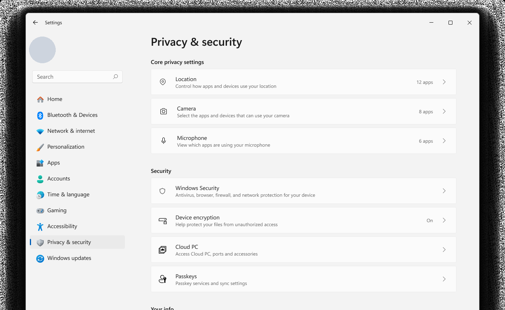
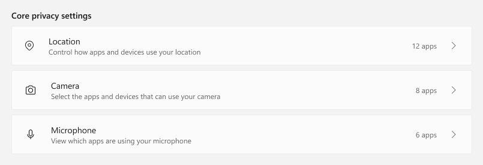

Overview
Privacy settings are the part of an operating system where people go when they already feel uneasy. Something asked for the microphone, or a light came on, and they want to know what has access and how to take it away. Windows had all of that information — it was just spread across a long, flat list where every permission looked equally important and none of them said what was actually going on.
This was an end-to-end refresh of how those controls are discovered and tuned. I worked across the boundary between design and implementation: contributing interaction designs grounded in CSAT verbatims and behavioral telemetry, then implementing the architectural changes that made them fast enough to feel instant. I partnered closely with designers and PMs throughout.
A list that answered the wrong question
The existing page was an inventory. It could tell you that a permission existed and whether its master switch was on, but it could not tell you the thing people actually arrive wanting to know: right now, who has this? Answering that meant opening a permission, scanning a list of apps, going back, and repeating — once per permission.
Reading CSAT verbatims alongside behavioral telemetry made the split clear. People weren't failing to find the settings page; they were landing on it and leaving without changing anything. The controls were discoverable. Their state wasn't.
The problem was never that people couldn't reach the toggles. It was that the page made them do the aggregation in their head — opening each permission one at a time to assemble a picture the system already had. The fix was to stop making them ask, and start telling them up front.
Grouping permissions by what they protect
The flat list became labelled groups, organized around the kind of thing at risk rather than the underlying API. Someone worried about being listened to shouldn't have to know whether that lives under "devices" or "apps" — they should be able to scan for the group that matches their worry.
The controls with the highest stakes and the most traffic, lifted to the top of the page instead of being ranked alphabetically among everything else.
Device- and account-level protections, kept adjacent to privacy but distinct from it — related concerns, different mental model.
Identity and account data: what an app can learn about you, as opposed to what it can sense around you.
Microphone, mail and messaging — the permissions people most often want to audit in a hurry.
Documents, folders and libraries, separated out so file reach reads as its own category of exposure.
Device-level sensors and capabilities that sit underneath everything else and rarely need touching.
Every row in every group is the same component — an icon, a plain-language description, and its control inline on the right. Uniform rows mean the eye can scan a column of state without re-learning a layout each time, and one component fix improves every group at once.
The three highest-stakes permissions — location, camera, microphone — move from wherever the alphabet put them to the top of the page. Everything else sorts into a group named for the kind of exposure it represents.

Answering “who has access?” before it’s asked
The centerpiece is a summary header that sits above each permission and states the answer directly — how many apps currently have access, with the apps themselves surfaced beside it. The count is the point: it turns an audit that used to take several taps into something you read.
Most of the design work went into the states around the happy path, because those are where a privacy surface either earns trust or loses it. A count that appears out of nowhere after a delay is worse than no count at all.
| State | What it shows | Why it matters |
|---|---|---|
| Loading | Skeleton placeholders in the shape of the final content | The layout never jumps, so a slow enumeration doesn't read as a glitch on a security page |
| Access off | The permission is disabled system-wide | Nothing has access and the page says so plainly — no counting required |
| 0 apps | Access is on, but nothing is using it | Distinguishes "switched off" from "on but unused" — two very different facts |
| 1 app | Singular phrasing, one app surfaced | Grammar that matches reality; the single case is common and shouldn't read as a template |
| Many apps | The count, with apps shown alongside | The scanning case the whole feature exists for |
| Hover | Affordance on the app entries | Signals the summary is a way in, not just a readout |

Designing for languages that don’t fit
A summary sentence with a number in it is a localization problem waiting to happen. Plural rules differ by language, word order moves the count around, and translated strings routinely run longer than the English they came from.
So the header was tested in the languages most likely to break it rather than only in English. Spanish stretched the string; Japanese changed its shape entirely. The component had to grow to absorb a second line of text instead of clipping or pushing the controls out of alignment.
Making it feel instant
A settings page that takes a beat to appear reads as broken, and on a privacy surface it reads as something worse — as though the system is deciding what to admit. The perceived speed of this page was a trust feature, not a nice-to-have.
I implemented the architectural changes behind the redesign and worked the rendering path directly, cutting perceived load time by 1.57 seconds. Paired with the restructured hierarchy, feature discoverability rose 10% — people were finding and using controls that had been sitting in the same product all along.
Nothing was added to this page. The controls, the data and the capabilities were all already there. What changed is that the page now states what it knows instead of making the reader assemble it — and it does so quickly enough that the answer feels like a fact rather than a result.
What I’d carry forward
- The empty and loading states were the design. Most of the value landed in "0 apps", "access off" and the skeleton — the states that are easy to treat as edge cases and are in fact the ones that decide whether a privacy page feels honest.
- Verbatims explain what telemetry can only flag. Telemetry showed people arriving and leaving without acting. It took reading their own words to understand that they'd found the setting and still couldn't tell what it was doing.
- Being on both sides of the handoff is a shortcut. Contributing the interaction design and then implementing it meant performance constraints shaped the design while it was still cheap to change, instead of eroding it afterwards.
- Localization belongs in the first round. Testing the header in Japanese early turned a rework into a sizing decision.
Shown with the permission of a shipping design. Screens reflect the public-facing Windows privacy and security settings experience; internal planning artifacts and unreleased surfaces are deliberately not included.